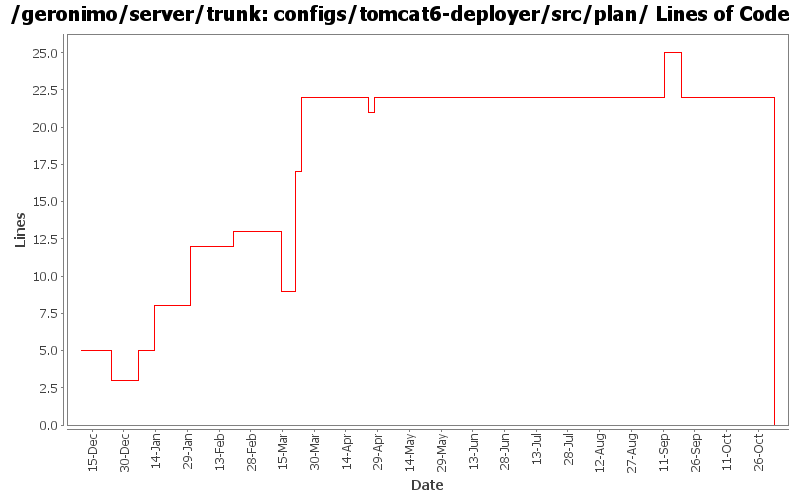

[root]/configs/tomcat6-deployer/src/plan

| Author | Changes | Lines of Code | Lines per Change |
|---|---|---|---|
| Totals | 19 (100.0%) | 50 (100.0%) | 2.6 |
| djencks | 5 (26.3%) | 29 (58.0%) | 5.8 |
| dims | 3 (15.8%) | 9 (18.0%) | 3.0 |
| jbohn | 4 (21.1%) | 5 (10.0%) | 1.2 |
| gawor | 2 (10.5%) | 5 (10.0%) | 2.5 |
| pmcmahan | 4 (21.1%) | 2 (4.0%) | 0.5 |
| prasad | 1 (5.3%) | 0 (0.0%) | 0.0 |
GERONIMO-3565. Configs distributed amongst framework/configs and plugins
0 lines of code changed in 1 file:
remove filtering of Spring classes and resources as it creates problems with the new admin console
1 lines of code changed in 1 file:
fix the cxf/spring issues by hiding the spring classes and resources from the application classloader and by making cxf to use cxf/car module classloader to load spring resources instead of the application classloader
4 lines of code changed in 1 file:
GERONIMO-3131 GERONIMO-3132 GERONIMO-3133 GERONIMO-3134 Defaults for persistence units. Supply locations of jars with persistent classes to the PersistenceUnitInfo. Match a ref with not persistence unit specified to a unique match. Allow wars to have jndi references pointing to the war module, not just the ear
3 lines of code changed in 1 file:
GERONIMO-3051 - revert 532106 changes now that 533154 is integrated
1 lines of code changed in 1 file:
GERONIMO-3051 Fix DB Viewer portlet error - patch from Frank G with a tweak to the jasper builder so things will build
0 lines of code changed in 1 file:
GERONIMO-3015 fix at least one reason persistence.xml files aren't found in tomcat wars
13 lines of code changed in 1 file:
Uniformize jetty/tomcat plans, assemblies
8 lines of code changed in 1 file:
clean up jstl references now that tld processing is improved with rev. 517712
0 lines of code changed in 1 file:
GERONIMO-2804 implement JSF support
- update the myfaces snapshot jars to avoid ELContext problem in its resolvers
- remove references to commons-taglibs where not needed or replace with references to jstl/jstl
- enable myfaces context listener in tomcat by providing new gbean property. tomcat's
default method for finding listeners in TLDs doesn't work with Geronimo's multiparent classloader.
- add org.apache.myfaces and org.apache.taglib to non-overrideable classes for webapps
- enable TLD processing in jetty context so that it can find the myfaces listener
- squelch spurious WARN messages from myfaces configuration startup
1 lines of code changed in 1 file:
switch order as per jarek's request
4 lines of code changed in 1 file:
Make the test case reflect the wsdl being used by adding other methods mentioned in the wsdl. added a xjc task in the pom.xml to generate the types needed for the fault. Ran the existing tests with both axis2 and cxf. Need to add more tests for the newly added methods.
2 lines of code changed in 1 file:
GERONIMO-2804 implement JSF support.
check in new myfaces-1.2-SNAPSHOT jars
separate jasper dependencies into a new config, pointing tomcat and jetty at it for their JSP support.
add the jstl and myfaces deps into the new jasper config since they need to use the same classloader
1 lines of code changed in 1 file:
Moved jstl integration from containers to defaultEnvironment on web deployers. Also cleaned up references to jstl and removed references to 1.1.1 version
4 lines of code changed in 1 file:
remove tabs from the poms in assemblies, add a couple of entries in configs
3 lines of code changed in 1 file:
GERONIMO-2686 missed the configs changes in previous commit
2 lines of code changed in 1 file:
GERONIMO-2671 support for stax and jaxb, with integration tests
3 lines of code changed in 1 file:
change "tomcat" artifactIds to "tomcat6" for :
configs/tomcat6
configs/tomcat6-deployer
modules/geronimo-tomcat6
modules/geronimo-tomcat6-builder
assemblies/geronimo-tomcat6-jee5
assemblies/geronimo-tomcat6-minimal
updated various poms, deployment plans, and plugin-metadata.xml files to reference the new tomcat6 artifactId
0 lines of code changed in 2 files: